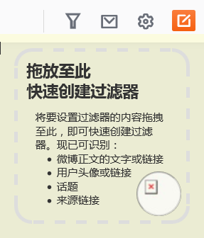
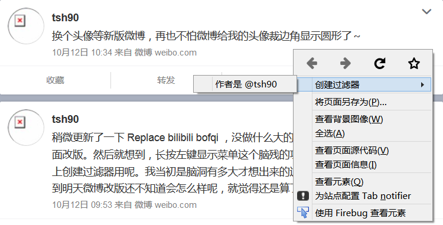
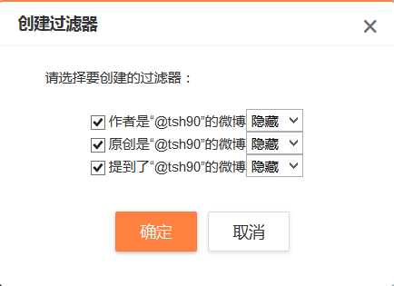

安装教程
对不起，脚本当前不支持您使用的浏览器。请考虑选择以下几个支持的浏览器之一。
设置脚本
安装成功后，到新浪微博的页面点击右上角的漏斗图标即可进入脚本设置。

想要简化界面又不想仔细研究脚本设置？试试导入这个示例脚本设置吧。下载这个文件，在设置窗口中点选脚本选项卡，点击导入打开该文件即可快速设置过滤器。
此外还有为您准备好的黑名单可供订阅，您可以来YAWF 过滤规则订阅页面看看。
主要功能
- 根据关键字、作者、来源等隐藏、折叠或高亮微博；使用拖拽轻松定义过滤规则；
- 屏蔽推广、粉丝头条、投票、好友赞过、抢红包、爱问医生等各种微博；防刷屏、版聊；
- 自动加载和过滤新微博，白名单新微博桌面提示；禁用首页下方的延迟加载；
- 清理版面上的各种模块、图标、小红点，去广告；过滤热门话题；使用方形头像；
- 合并左右边栏的双栏模式，加宽加大的微博宽度和微博字号，自定义微博字体；
- 去除微博间的空白，缩小微博下操作按钮距离，重新安排他们的顺序；
- 自动检查首页上是否遗漏了特定用户的最新微博，不错过他的任何一条消息；
- 展开左栏消息分组；让各种浮动的模块回到原位；统一各种页面的边栏位置；
- 查看原图，展开 t.cn 短网址；清除发布框默认话题，禁止自动关注话题主持人；
- 微博作者和正文不拆行；按字数自动展开或隐藏长篇幅的微博，禁用微博换行；
- 设置网页模板，自定义半透明背景色，深色导航栏，经典导航栏布局；
- 正常大小的微博缩略图尺寸，显示在微博下面的发布时间和来源（针对2016新版）；
- 方便的新功能更新提醒；设置备份，以及在导入时提示设置最新功能；
- 使用本机时区显示微博上的各种时间（针对非东八区用户）；
脚本安装后大部分功能不会默认启用，您需要到脚本设置中启用对应功能。随您使用的浏览器的不同，支持的功能可能有个别不同。
完整功能列表
列表仅供参考，您安装脚本后，可能显示的功能和以下略有不同。列表可能会随您的操作系统和浏览器的设置和版本不同有细微差别。
详细说明
安装脚本后，点击右上角的漏斗图标就可以开始设置脚本了。
虽然脚本的设置项很多，不过刚刚安装脚本后，您可以先看看“微博过滤 - 更多”“版面清理”“功能改造”“外观样式”四个选项卡。
- “微博过滤 - 更多”包括各种特殊类型的微博的过滤规则，比如推广微博，比如好友赞过的微博等等，刷微博时免受各种干扰。
- “版面清理”可以隐藏掉版面上绝大多数的模块，哪个模块你不想看到，勾选对应的选项你就可以再也见不到他了。
- “功能改造”为您提供了各种方便的小功能，从自动展开不是太长的长篇幅微博，到检查首页是不是丢了某些特定用户的微博，甚至恢复微博的双栏模式，总有您需要的小功能。
- “外观样式”不管是增大微博正文字号，还是把点赞移到评论左面，或者把新版的超大图片恢复成正常的大小，您微博的样子您自己做主。
刷新微博网页试试不同的选项，找到一组满意的设置。然后就继续浏览微博内容吧。至于按关键字、作者什么的过滤规则，等到遇到特定的微博时再去解决也不算晚。
浏览微博时遇到了什么想要隐藏的内容？不管是想按照关键字、用户、来源还是链接来过滤，只要把它们拖拽起来，扔到右上角出现的黄色的区域内，脚本就会识别对应的内容并帮您创建过滤器。
或者您可以看在微博上点击右键，可以在菜单中找到快速创建过滤器的选项。（右键菜单功能仅支持 Mozilla Firefox 浏览器）
 如果您之前使用“眼不见心不烦”脚本，在设置脚本之前，您也可以在脚本的“关于脚本”选项卡中找到“从‘眼不见心不烦’脚本导入设置”的功能。（需要您同时安装并启用“眼不见心不烦”脚本或扩展，才会看到该功能）
关于详细的使用指引，请参见常见问题。
隐私权政策
信息收集
脚本不会以任何方式收集您的任何个人信息。但您使用脚本过程中产生的网络访问可能会被您的网络提供商以及对应网站所记录。
网络访问
脚本的网络访问限于访问新浪网的相关接口，限于获取或传输以下数据：
- 您在设置中选择隐藏、折叠、显示的帐号的信息；
- 如果您要求使用 HTML5 播放器替换 Flash 播放器，脚本会从新浪的服务器获取 MP4 文件的地址；
- 如果您要求检查是否有哪些特定账号的微博没有显示在首页上，脚本会自动每隔一段时间访问对应用户的个人主页；
- 如果您要求自动展开长篇幅微博，脚本在遇到此类微博时，会自动从微博的网站上获取微博全文。
本地存储
脚本会存储您的设置等相关信息到浏览器配置文件中，具体包括：
- 脚本设置的隐藏、折叠或显示的用户编号、昵称，您的账号编号，您隐藏的微博的编号，及其他设置项；
- 如果您开启了桌面提示功能，脚本还会记录最近20条显示桌面提示的微博的编号；
- 如果您开启了表情输入的辅助功能，脚本还会记录您最近使用的表情和置顶的表情；
- 如果您开启了检查首页是否有缺失微博的功能，脚本还会记录您最近在首页看到过哪些微博，这些帐号最近发了哪些微博以及您看到了哪里；
- 如果您开启了自动展开长篇幅微博的功能，脚本会将最近遇到的若干条此类微博的长度和全文存储在本地以方便下次遇到时直接展开。
任何使用该计算机的用户都可以读写该配置文件，所以建议不要在公共电脑上使用。
其他
脚本不会以您的身份发布任何微博或消息。
如果您使用脚本的导出设置的功能，导出的文件以未加密的方式保存了您对脚本的所有设置，其中可能包括您的相关个人信息，请勿随意传播给他人。